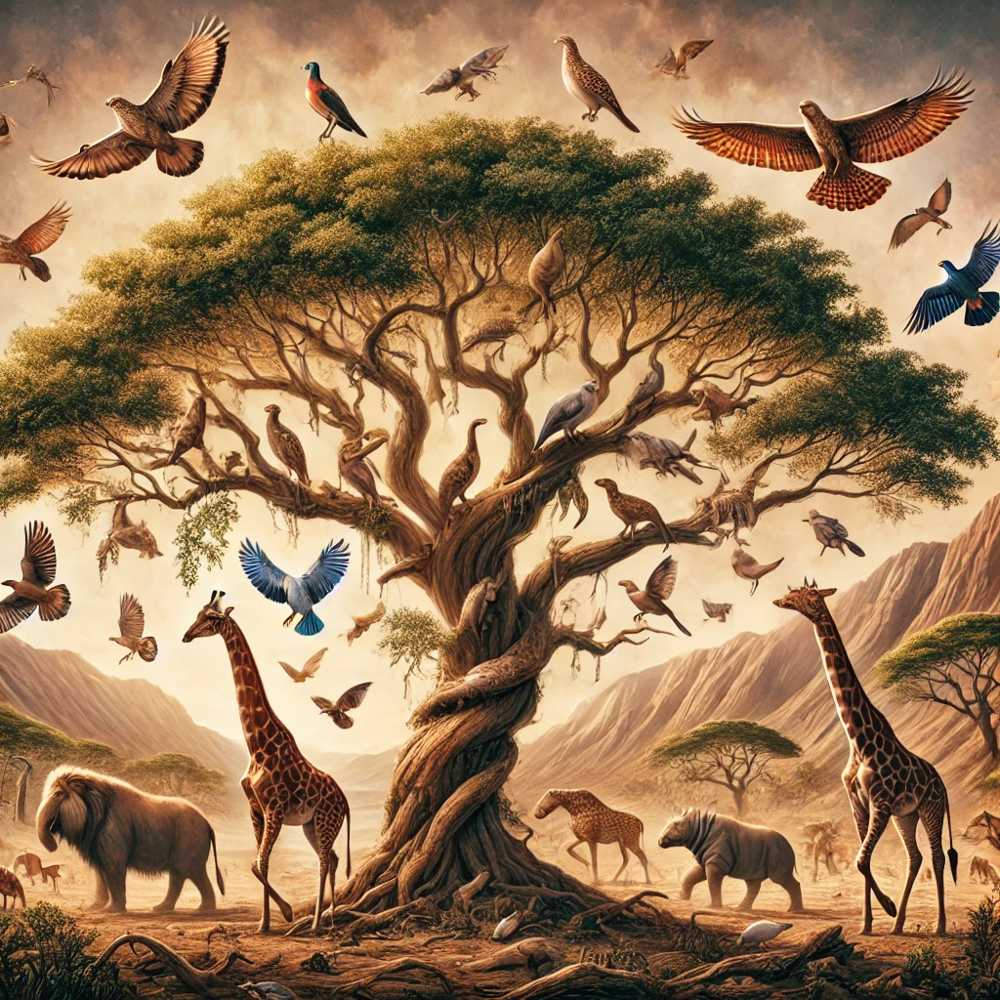

종의 기원
목차
작가
찰스 다윈
출판일
1859년
감상평에 대한 AI그림
"종의 기원"을 읽으며 멀게만 느껴졌던 진화론에 대해 한층 깊이 이해한 것 같았다.
자연선택에 의해 생명이 진화한다는 사실이 신선했으며, 생명의 다양성에 대해 더 많은 의문을 품게 되었다.
이러한 연구가 아주 오래전에 시행됐음에 놀랐다.

감상평에 대한 AI 감정 평가
이 글의 감정을 분석해 보면 다음과 같은 요소들이 포함되어 있어.
### **🔹 감정 평가**
1. **이해와 깨달음 (Understanding & Realization) 💡**
- "멀게만 느껴졌던 진화론에 대해 한층 깊이 이해한 것 같았다."
- 처음에는 어렵거나 멀게 느껴졌던 개념이 책을 통해 더 명확해졌다는 점에서 깨달음과 이해의 감정이 드러남.
2. **호기심과 탐구심 (Curiosity & Inquiry) 🔍**
- "생명의 다양성에 대해 더 많은 의문을 품게 되었다."
- 책을 읽으며 단순한 지식 습득을 넘어, 더 많은 질문을 하게 되었다는 점에서 지적 호기심이 느껴짐.
3. **놀라움과 경이로움 (Amazement & Wonder) 😲**
- "이러한 연구가 아주 오래전에 시행됐음에 놀랐다."
- 다윈의 연구가 오래전에 이루어졌음에도 불구하고 여전히 중요한 가치를 지닌다는 사실에 놀라는 감정이 담겨 있음.
### **🔹 종합적 감정 평가**
이 글은 **이해, 호기심, 놀라움**의 감정을 중심으로 이루어져 있어.
진화론을 단순히 받아들이는 것이 아니라, 더 깊이 생각하고 탐구하려는 태도가 인상적이며, 과학적 발견에 대한 경이로움이 잘 드러나 있어! 😊